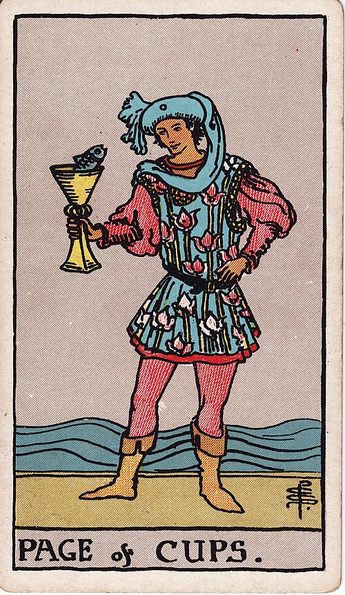

| Arcana | Minor |
| Suit | Cups |
| Element | Water |
| Attribution | Earth of Water |
Page of Cups
In shortA sincere message, probably a bit awkward.
Upright
Something soft and surprising arrives from your inner world — news that touches you, an unexpected creative idea, or the willingness to be sincere without hiding behind irony. It is a little awkward and completely genuine. As advice: share the feeling before you have polished it.
Reversed
Feeling gets clumsy. Moodiness, sulking, a reaction out of proportion to the event, or a creative idea abandoned because the first attempt was bad. It can point to a message you have written and not sent.
The turn
Send the sincere message. Do not workshop it into safety first.
Reading with your own deck?
Sage records the cards you actually pull, writes the reading, keeps every one, and shows you what keeps returning across them. Free, private, no account.